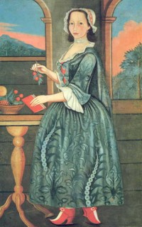

by
Stefan Bielinski
Magdalena Douw was born in 1718. She was first child born to Captain Petrus and Anna Van Rensselaer Douw of Albany and the colony of Renssleaerswyck. She was the sister of one-time Albany mayor Volckert P. Douw and grew up in Albany and at the family seat across the river called "Wolvenhook." All eight of her siblings survived to be visible residents of eighteenth century Albany.
Lena married rising businessman Harman Gansevoort in 1740. The beautiful portrait on the right was painted about the time of her wedding. By 1759, their nine children had been baptized in the Albany Dutch church where she was an occasional baptism sponsor.
For more than fifty years, these Gansevoorts were prominent residents of Market Street where their landmark home was attended by a number of servants.
Magdalena Douw Gansevoort died in December 1796. Her husband passed in 1801. Peter and Leonard Gansevoort were their famous sons!

notes
 Sources: The life of Magdalena Douw Gansevoort is CAP biography number 90. This profile is derived chiefly from
family and community-based resources. An article related to her story entitled "The Albany of Magdalena Douw," by has been printed in the Winterthur Portfolio, volume 4 (1968).
Sources: The life of Magdalena Douw Gansevoort is CAP biography number 90. This profile is derived chiefly from
family and community-based resources. An article related to her story entitled "The Albany of Magdalena Douw," by has been printed in the Winterthur Portfolio, volume 4 (1968).
Portrait done about 1740 by limner John Heaton is in the collection of the Winterthur Museum. Fortunately, this colorful painting has appeared in print a number of times. Although it perpetuates an almost doll-like stereotype of "colonial Dutch" women, its attractiveness never fails to delight program participants - young and old alike!
first posted: 7/25/03